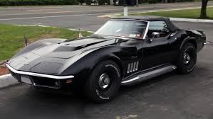
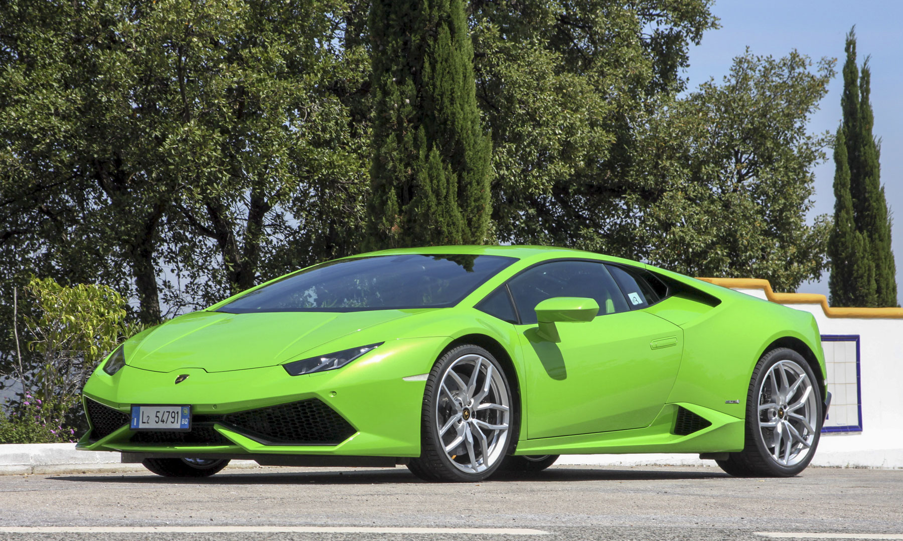
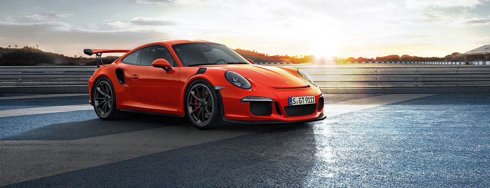
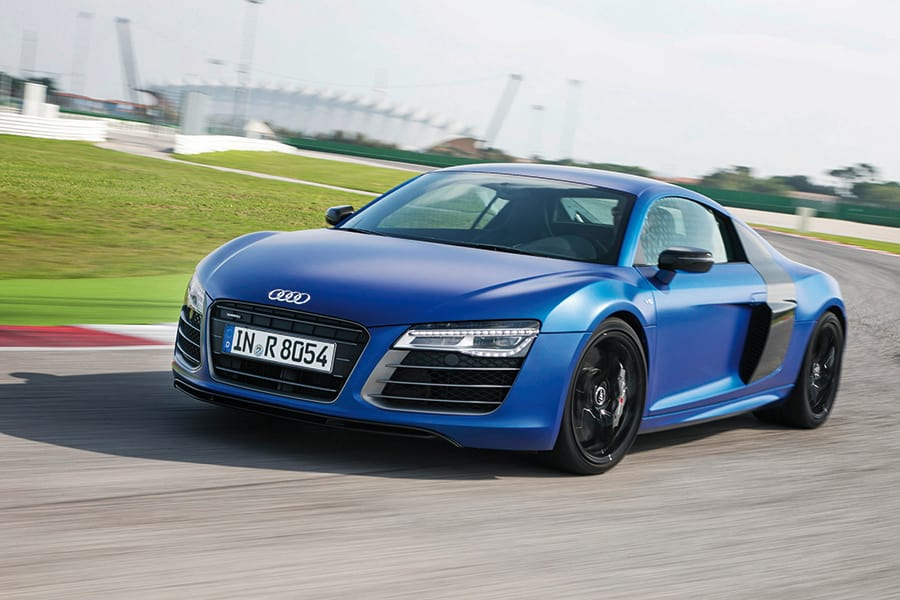

This is a Page about Cars
1969 Chevy Stingray

The 1969 Corvette brought back the "Stingray" badge although it was now one word. This classic Corvette refined the new 1968 model with changes that increased horsepower as well as fixing small things that were irritating to customers. This also created a large number of parts that were only manufactured for 1968 and makes restoring the 1968 Corvette much more difficult than a '69. The base engine is now a 300 horsepower 350 cubic inch V-8. The ignition was moved from the dashboard to the steering column. The push button door opener was now integrated into the pull handle and the push button opening now has a key lock in it. The steering wheel diameter was reduced from 16" to 15". A side exhaust was now an option as well as special side louver trim pieces. Backup lights were integrated into the middle tail lights. A labor dispute in May of 1969 caused the 1969 model run to be stretched over 4 months. This accounts for the high number of Vettes sold this year and the low number in 1970
Go Here for more info about the car
2015 Lamborghini Huracan

The Lamborghini Huracan can go from 0-62 in 3.2 seconds. It has a 5.2 liter V10 engine. It has a smaller footprint that the Aventador. The styling takes cues form both the Gallardo and the Aventador.
Go Here for more info about the car
Porsche 911 GT3S

The Porsche 911 has a horsepoer of 500hp at 8250rpm. It can go from 0-60 in 3.1 seconds. It's top track speed is 193 mph. It get 14 mpg (city) and 20 mpg (highway).
Go Here for more info about the car
Audi R8

The Audi R8 has a manual transmission. Its all wheel drive.